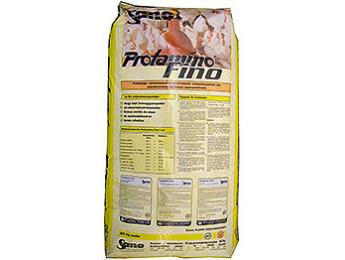

Protamino Fino
"35% концентрат (финиш) для домашней птицы."
Свойства:
- Оптимальное содержание белка, хорошо усваивается;
- Аминокислоты: лизин, метонин, треонин в соответствующих пропорциях;
- Все необходимые витамины, микро- и макроэлементы, улучшающие результаты откорма;
- 3,0% кальция; 1,3% фосфора; 0,55% натрия для правильного развития организма;
- Наличие фитазы, что обеспечивает биодоступность до составляющих корма и улучшает усвоение.
Преимущества применения:
- Очень хорошее состояние здоровья;
- Больше выращенных цыплят, уток, гусей;
- Большая масса тела и защита от ожирения;
- Высокий уровень усвоения корма;
- Хорошие производственные показатели;
- Простота в использовании;
Рекомендуемые рационы на основе Протамино Фино:
| Протамино Фино | Зерно | ||
|---|---|---|---|
| Бройлеры Стартер | 35% | + | 65% |
| Бройлеры Гровер | 30% | + | 70% |
| Бройлеры Финиш | 25% | + | 75% |
| Курчата до 10 тиж. | 30% | + | 70% |
| Курчата після 10 тиж. | 25% | + | 75% |
| Несушки | 25% | + | 68%+7% мел |
| Гуси до 3 тиж. | 30% | + | 70% |
| Гуси до 10 тиж. | 25% | + | 75% |
| Качки до 3 тиж. | 30% | + | 70% |
| Качки до 10 тиж. | 25% | + | 75% |
